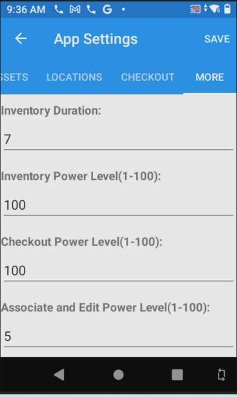
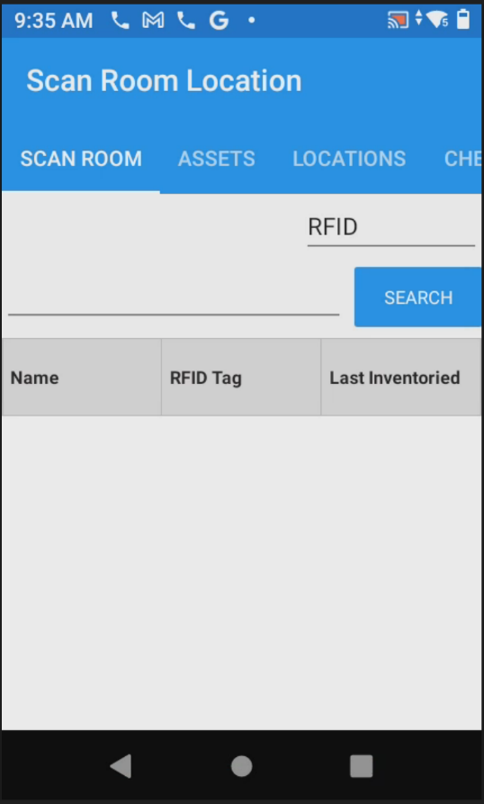
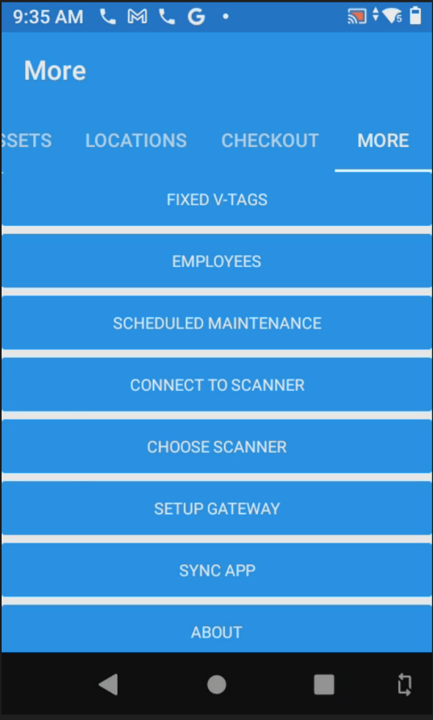
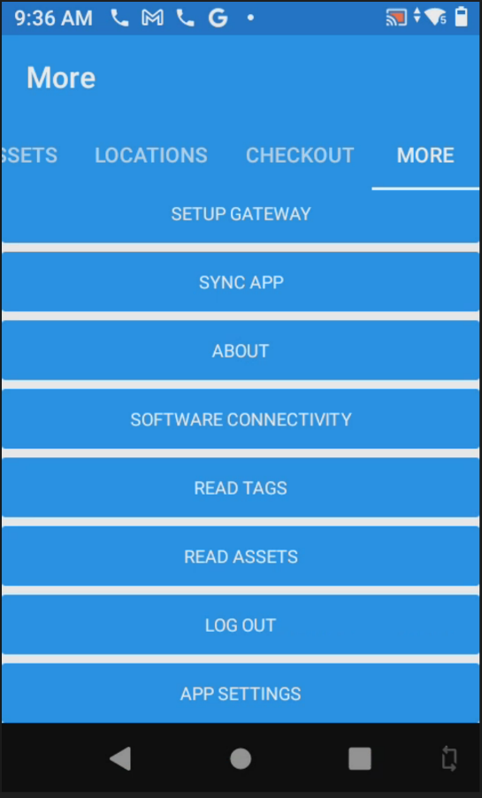
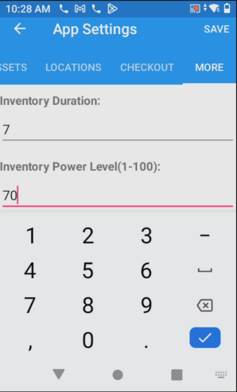
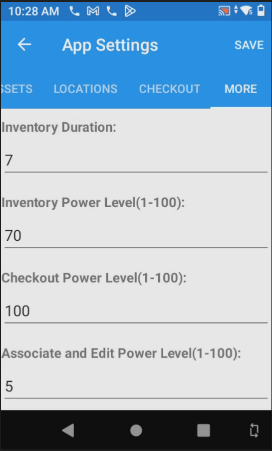
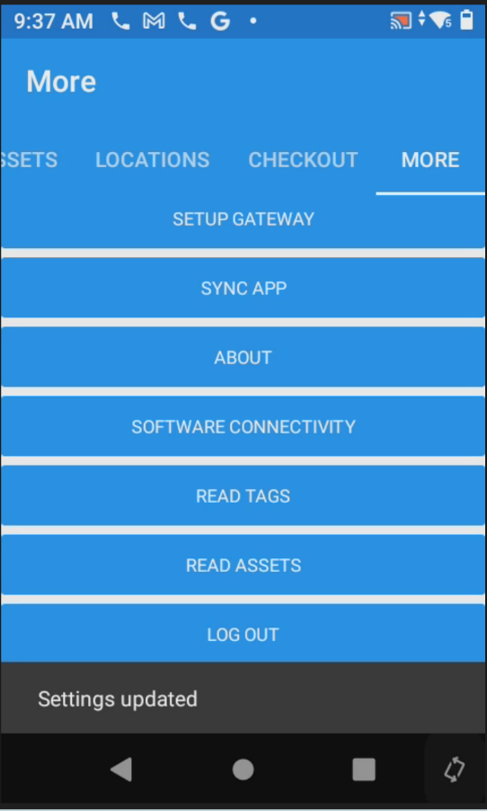

The iDash app lets you control the RFID antenna power level for each scanning mode independently. Lower power narrows the read range — useful in dense environments where you want to avoid reading tags from adjacent rooms. Higher power extends range for large, open spaces.
Power levels are set on a scale of 1–100. The app has three independent power settings, each controlling a different scanning mode:
Controls RFID read range when performing room inventory scans using the top trigger. Default: 100.
Controls read range during asset checkout workflows. Default: 100.
Controls read range when associating RFID tags to assets or editing records. Kept low intentionally to read only the tag directly in front of you. Default: 5.







| Scenario | Inventory Power | Notes |
|---|---|---|
| Standard room inventory | 100 (max) | Best for most VA rooms. Reads all tags in a standard patient room without needing to get very close. |
| Dense environments (hallways, storage rooms packed with equipment) | 50–70 | Reduces bleed into adjacent areas. You may need to sweep more slowly or in closer passes. |
| Tag association / pairing | N/A | Always use the Associate & Edit Power Level (keep at 5) — ensures only the single tag directly in front of the reader is picked up. |
| Large open bays or warehouses | 100 | Full power. Walk the space in a grid pattern to ensure full coverage. |